ART PROJECT / 现场绘画 / 地图 / 邮票与邮戳
阡陌集。
在纸上交汇的时间与空间
在各地停下来画画，把眼前的风景与手绘地图放在同一页，贴上邮票，再盖下当天当地的邮戳。让一张纸，同时留下时间与空间的印记。
阡陌纵横，时间与空间在纸上交汇。
绘画留下当时的感受，地图标记身处的位置；邮票与邮戳，把这次停留落在具体的地方与日子里。画册与眼前的实景相互对照，记录一次观看，也记录一个曾经在场的自己。
“阡陌”不只是纵横交错的路径，也是时间与空间、感性与理性的交叉。一边是观看、色彩与手的痕迹，一边是地图、位置与日期。旅行中一次次短暂的停留，慢慢汇成可以翻阅的时空记录。
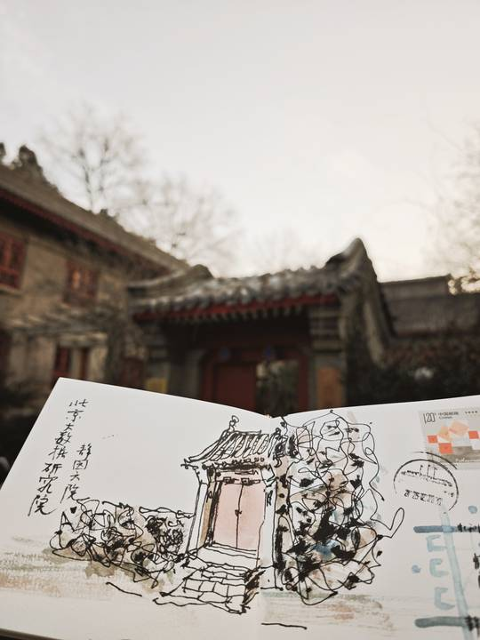
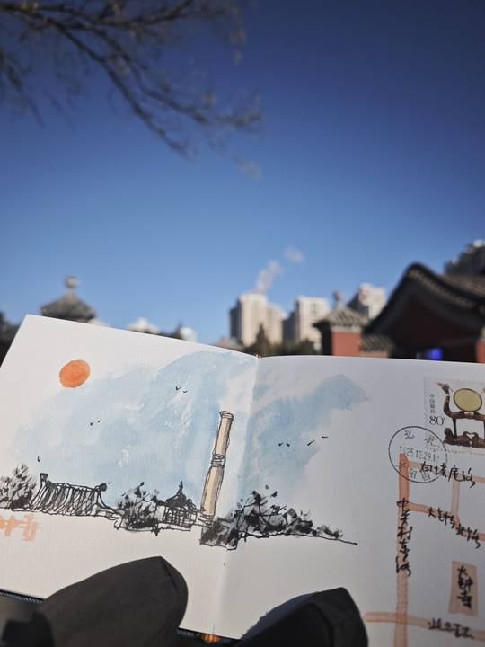
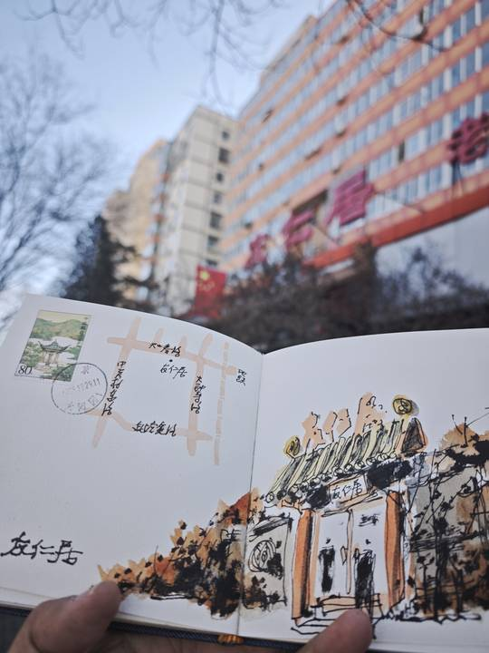
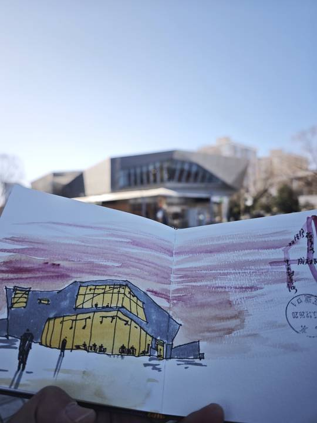
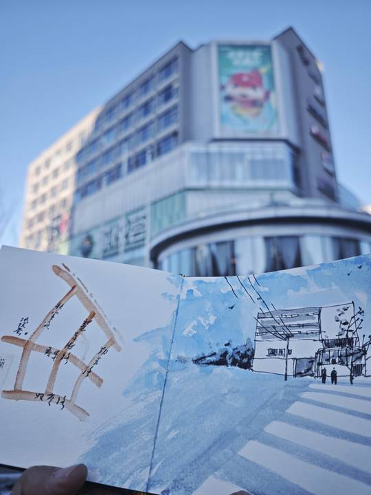
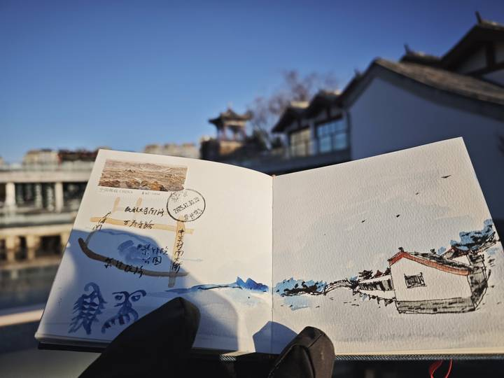
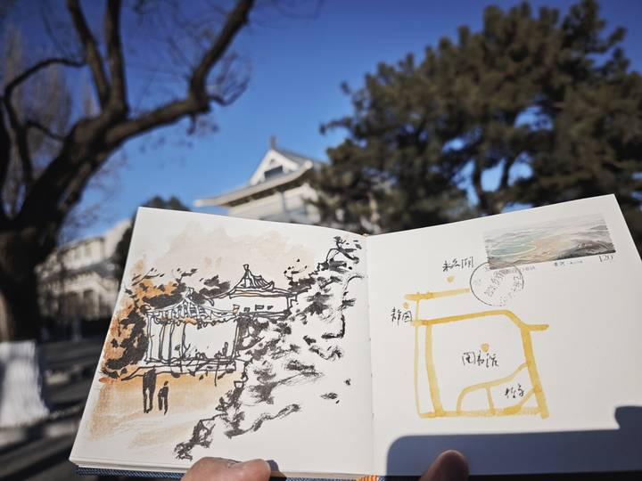
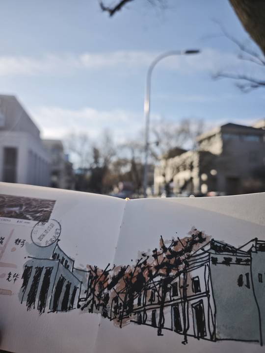
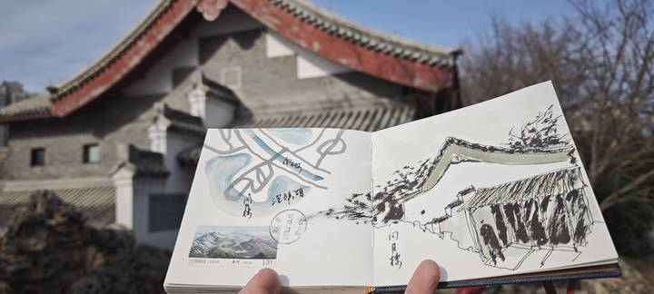
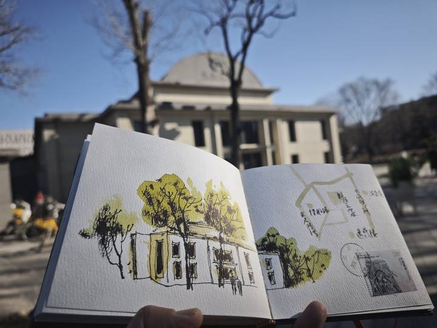
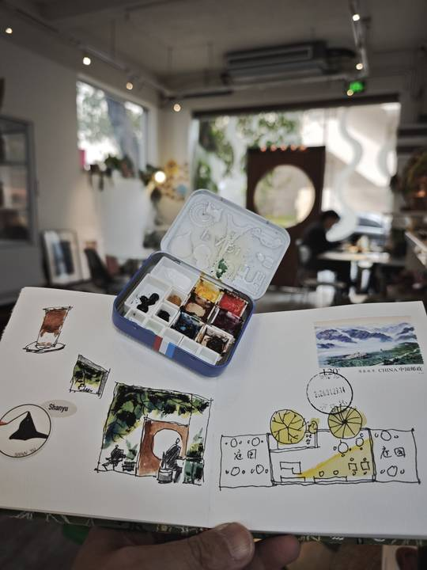
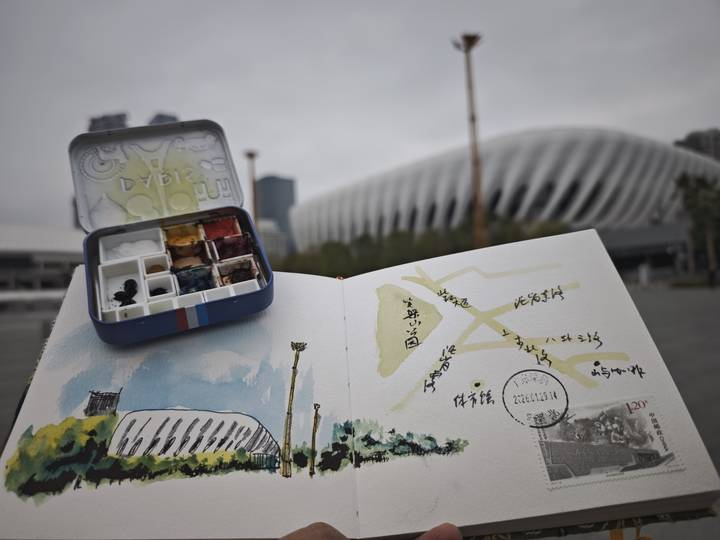
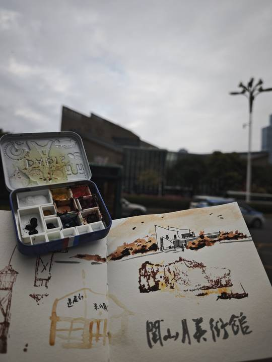
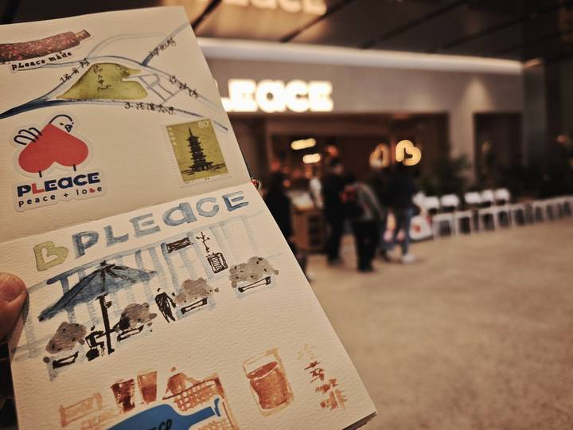
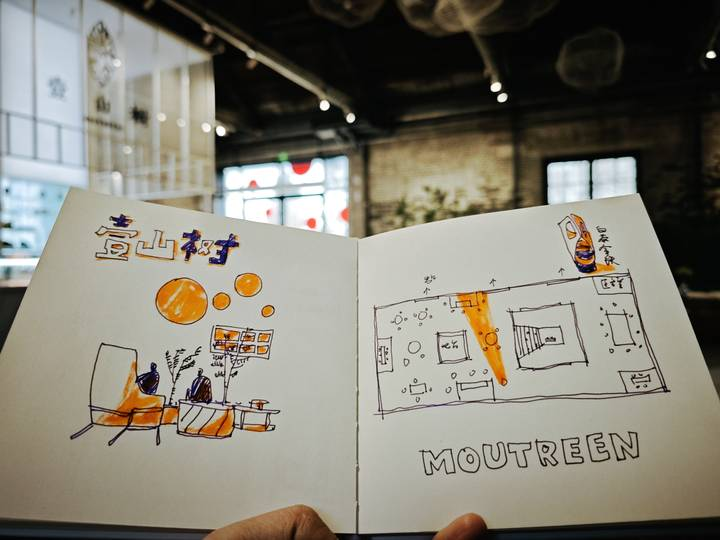
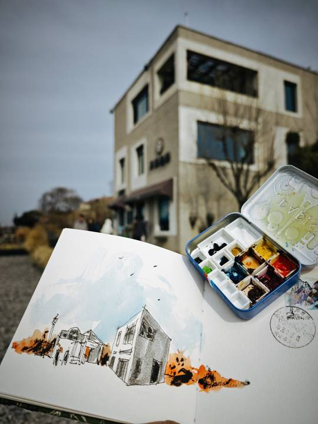
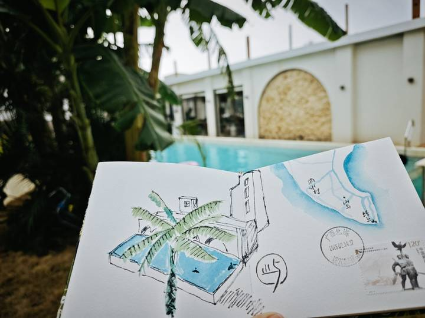
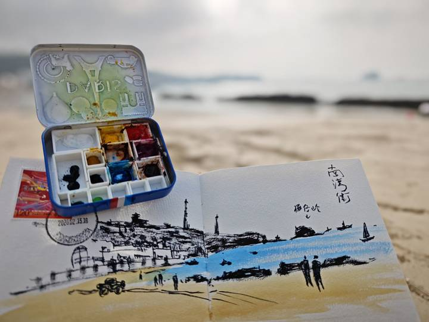
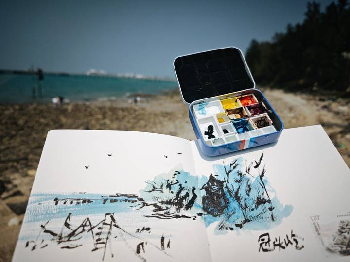
绘画与现场记录：王安。项目介绍根据作者阐述整理。
停下来，再看一眼。
把自己的旅途装进手工本